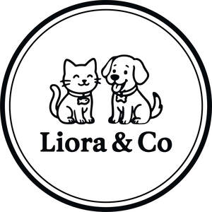

Trade Mark Journal No.2025/041 10 October 2025
UK00004268644 24 September 2025 (3,7,18,20,21,28,31)

- Class 3
- Pet Shampoos.
- Class 7
- Self-cleaning cat litter box; Automatic pet feeder; Electric fur remover; Electric pet water fountain (automatic dispenser); Electric nail grinder for pets; Automatic ball launcher for pets; Electric pet hair clipper; Automatic pet food measuring device; Smart (electric) feeding and watering system; Automatic odor eliminator (for litter boxes).
- Class 18
- Pet clothing.
- Class 20
- Pet houses; Pet crates; Pet furniture; Pet cushions.
- Class 21
- Litter trays for pets; Pet mats; Pet feeders; Pet cleaners; combs; Pet brushes; Pet grooming gloves; Pet toothbrushes; Litter scoops; Pet feeding bowls; Pet water bowls; Collapsible feeding and water bowls; Pet shampoo brushes; Pet bathing gloves; Pet hair removal rollers; Cat litter mats; Pet nursing bottles (for young animals); Food measuring scoops; Travel bowls for carriers; Catnip containers; Holders for pet dental sticks; Pet washing buckets; Pet soap holders; Non-slip mats for food and water bowl; Pet feeding dishes.
- Class 28
- Pet toys; Doll clothing.
- Class 31
- Pet foods; Pet beverages; Edible pet treats.
Dali Global Ltd